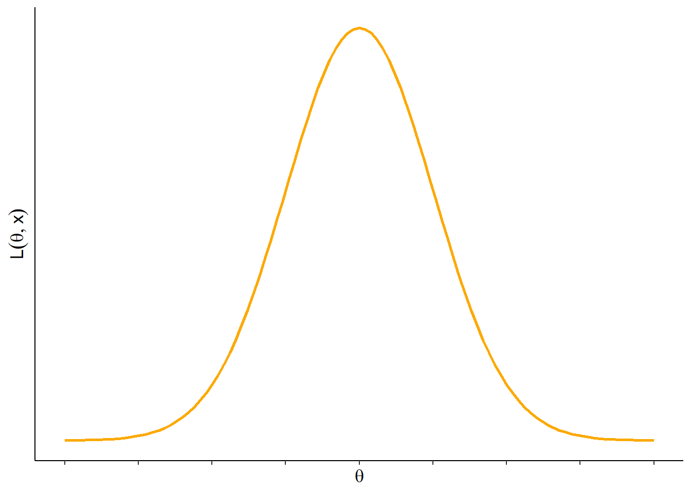
Motivation
You ran your experiment, collected the data, figured out how to download it in a normal form, and even cleaned and pre-processed it! All this for one simple linear regression model? In the current post I introduce the Bayesian approach for statistical modeling and inference, that can enrich your paper or thesis, and tell new stories using you data. The current post is by no means a full technical/theoretical/mathematical summary of Bayesian statistics and modeling. It’s main purpose is to make things as simple and smooth for students who want to learn some new statistical analysis methods.
Introduction
Dependent on the stage you are in your academic career in Psychology, you are probably quite familiar with what I will refer to as Frequentist inferential statistics. The underlying assumption of these models is that probability is relative frequency at infinity. All frequency test are conducted under the assumption of a particular world (the Null-Hypothesis). In my opinion, this way of inference is only intuitive to us because we are so used to it. I argue that in the real world we update our knowledge in a different way. We assign degrees of belief to different possible hypotheses (worlds) - some worlds are more probable than others. When data is observed, it is used to update our beliefs, and make some possible worlds more probable, and others less probable.
The Bayesian interpretation of probability as degree of belief stands at the foundation of Bayesian statistical modeling (duh). We first assign probability to all possible worlds, than we observe the data, combining them together and update our beliefs.
Bayes theorem
Discrete events
So what is Bayesian about Bayesian statistics? going back to Intro to statistics in your BA, you learned to derive the Bayes theorem in probability: \[ P(A|B)=\frac{P(B|A) \cdot P(A)}{P(B)} \]
In plain words: the probability of \(A\) conditional on \(B\) is equal to the product of the probability of \(B\) conditional on \(A\) and the prior probability of \(A\), divided by the probability of \(B\). The Bayes theorem gives a rigorous and mathematically defined way of updating beliefs in face of observed data. Sounds familiar? it should! this is exactly what you are doing (or at least want to do) in your thesis/research! you observe some Data and try to learn from it about the World. In your case, World = some statistical, model = some set of parameters.1
Probability Distributions
So what is the probability of your hypothesized set of parameters given the data you observed? Replacing \(A\) with your set of parameters, and \(B\) with the observed data we get:
\[ P(Parameters|Data)=\frac{P(Data|Parameters) \cdot P(Parameters)}{P(Data)} \]
One thing that we need to remember is almost all2 of the terms above are no longer single probability values, but continuous probability distributions. For example, the term \(P(Parameters)\) is a probability density distribution in which each possible combination of values of your parameters is assigned a probability.
Each of the terms above has an important role in the world of Bayesian modeling.
Likelihood
The term \(P(Data|Parameters)\) describes the likelihood of the observed data under different sets of parameter values. In order to keep things simple I will not delve deeper into the theoretical aspects of likelihood (see Etz (2018), Pawitan (2001)). The main things that are important to know as a researchers about the likelihood function is that you are responsible to choosing it! For example, if I suspect that my dependent variable comes from a normal distribution (where you otherwise would fit some sort of linear model for), I will use the normal likelihood function3:
If, on the other hand, I suspect that my dependent variable comes from a Poisson distribution (e.g. number of times a participant scratched their nose), I will use the Poisson likelihood function:
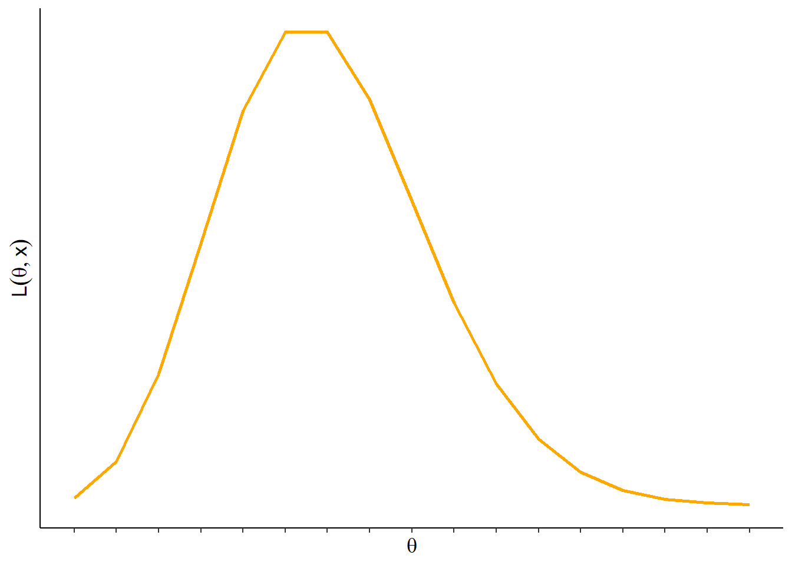
In general, you as a researcher need to define the Data Generating Process (DGP) - How were your observations generated?
This choice is analogous to the choice of statistical model/test in the frequentist paradigm. A linear model (t-test, ANOVA, linear regression) assumes a normal DGP, a Generalized linear model assumes some other DGP like a Binomial, Poisson, Inverse Gaussian etc.
Prior
The next term - \(P(Parameters)\) is called the Prior probability distribution. This term represents the prior knowledge about the parameters in your model. Choosing a prior, a process that is sometime called prior elicitation, is difficult. How can one take into account all of the prior knowledge about something and neatly represent it with one probability distribution?? For this reason I will refer to 2 relatively-easy-to-define aspects of prior elicitation:
- Range of possible/probable parameter values - Some parameters can only take certain values, creating a-priori hard limits for them. For example, a normal distribution’s variance \(\sigma^2\) can only take positive values. Softer limits can also exist, for example: in a new/old recognition task, it is reasonable to predict that new items will be identified as new, more than old items - the regression coefficient should be positive. In the first case, a prior with hard boundary will be appropriate:
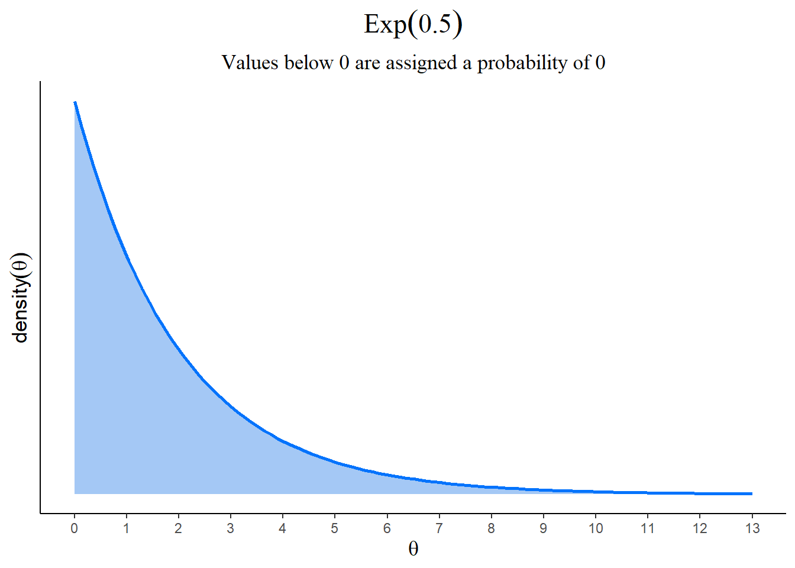
While in the second case, a prior like this would be better:
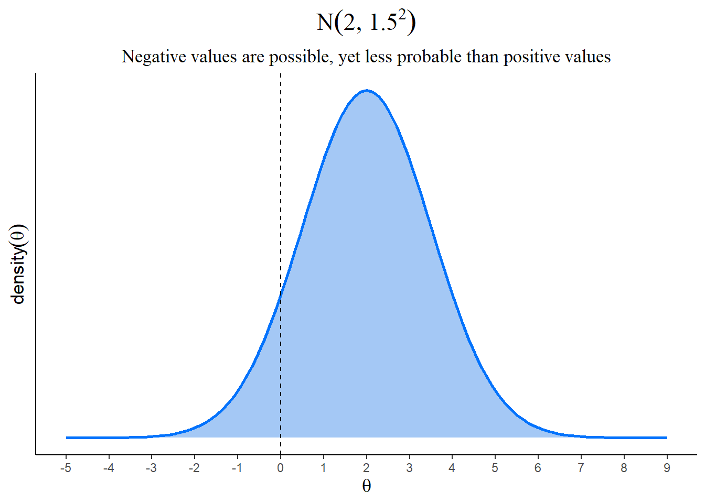
- Degree of informativeness - Priors also differ from each other in their impact on the model. A prior can be weak or strong in this aspect.
- Weak Priors - These priors are typically wide and cover a large range of possible values.
- Strong Priors - These priors are narrower and leaves few parameter values probable.
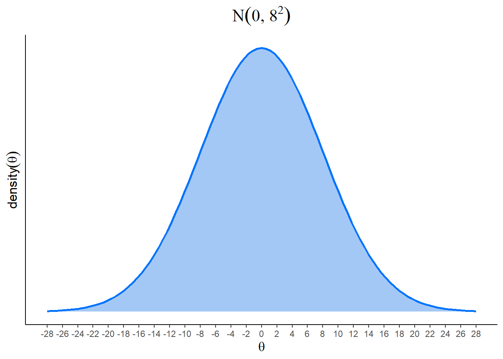
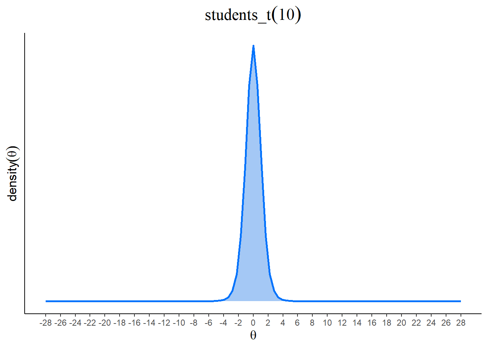
Evidence
The denominator of Bayes’ theorem - \(P(Data)\) is called the evidence. It’s important role is to act as the standardizing term to the numerator (\(Likelihood \cdot Prior\)). Recall that the likelihood is not a probability distribution, so in order for it’s product with the Prior - a probability distribution - to be equal to the Posterior - another probability distribution - a standardizing term is needed.4 This term is often impossible to calculate analytically, and therefore fancy numeric estimations are used.
Posterior
The posterior probability of your model - \(P(Parameters|Data)\) - is the ultimate goal of your analysis. This probability distribution tells you what values of your parameters are probable and what values not so much. This is a shift of perspective from the usual frequentist logic - instead of resulting in one number as estimate for your parameter, you end up with a whole distribution!
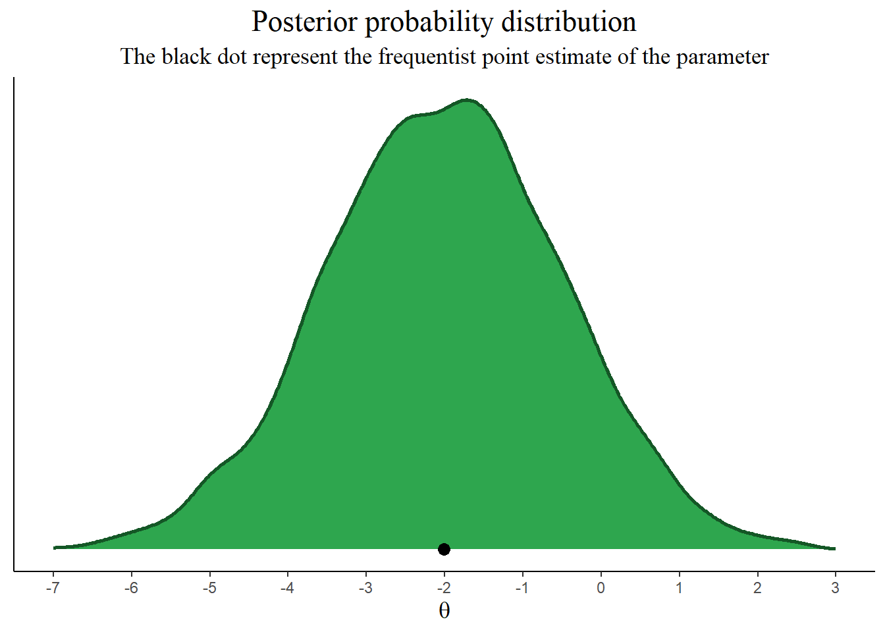
I think that Getting the posterior from the Likelihood and the prior makes more sense visually (make sure to also play with Kristoffer Magnusson’s wonderful interactive visualization):
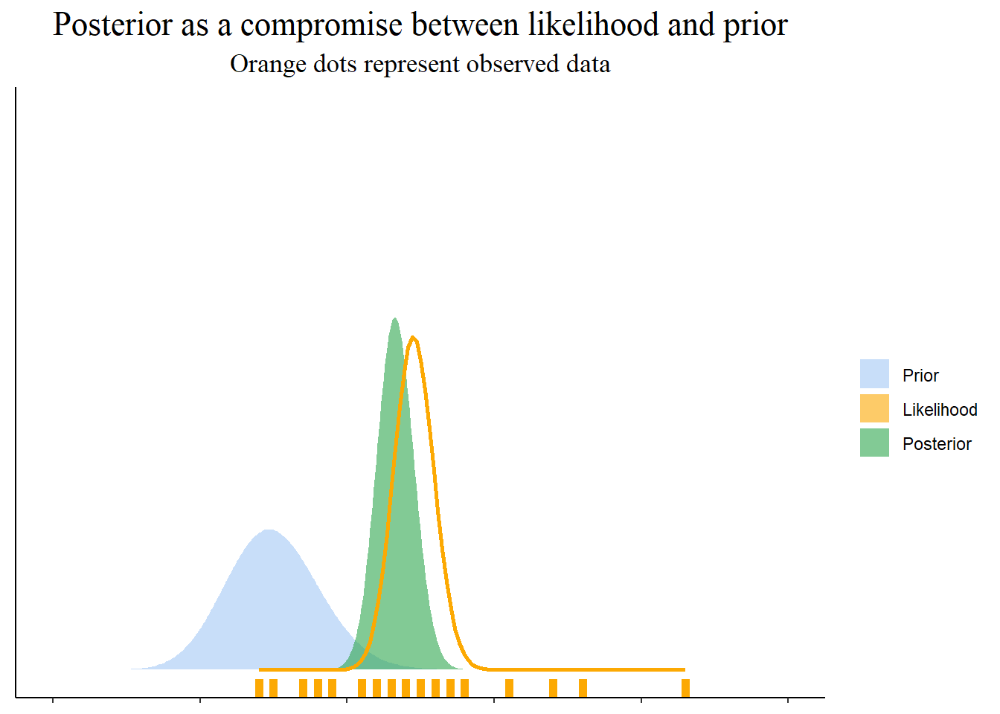
Bayesian Modeling - How to do it?
How to actually estimate the posterior probability of our parameters? As we seen before, we will need to define a prior for all parameters, we will need to choose the likelihood function, and we will need to calculate that annoying evidence in the denominator.
All of this made easy with the amazing brms package (Bürkner (2017)).
brms setup
# install.packages("brms")
library(brms)
Important
brms is actually translating your R code into Stan (Stan Development Team (2018)), a programming language that is specialized in estimating posterior distributions. Therefore, you will also need to install some sort of backend. Using cmdstanr is probably optimal, but because it’s installation can be tricky, Rstan is another option.
Simple linear regression
Let’s start with the most simple example. Consider the sex differences in cats’ body weight:
data <- cats
head(data) Sex Bwt Hwt
1 F 2.0 7.0
2 F 2.0 7.4
3 F 2.0 9.5
4 F 2.1 7.2
5 F 2.1 7.3
6 F 2.1 7.6Fitting a linear regression model:
lm_cats <- lm(Bwt ~ Sex,
data = data)
parameters::model_parameters(lm_cats) |> insight::print_html()| Parameter | Coefficient | SE | 95% CI | t(142) | p |
|---|---|---|---|---|---|
| (Intercept) | 2.36 | 0.06 | (2.24, 2.48) | 39.00 | < .001 |
| Sex (M) | 0.54 | 0.07 | (0.39, 0.69) | 7.33 | < .001 |
Male cats weigh \(0.54\) Kg more than female cats, and this difference is statistically significant.
Bayesian Modeling - Doing it!
Prior elicitation
How many parameters are there?
1. Intercept - Representing the value of Bwt when the IV is \(0\). Meaning it is the estimated mean weight of female cats.
2. Slope of \(SexMale\) - Estimated difference in body weight between male and female cats.
3. \(\sigma^2\) - The variance of the residuals (variance of the conditional-mean normal distribution of Bwt).
What prior knowledge can we incorporate into each parameter?
1. average weight of female cats should probably be ~2Kg-3Kg.
2. Male cats should probably weight more than female cats.
3. The sigma is not so interesting, so I will just define a wide prior.
prior <- set_prior("normal(2.5, 2)", class = "Intercept") +
set_prior("normal(1, 2)", coef = "SexM") +
set_prior("exponential(0.01)", class = "sigma")Tip
If you are not sure what are the parameters of your model, use the brms::get_prior() function to get your model’s parameters and their default brms priors.
Posterior estimation
In case you missed it, we already defined our likelihood function to be the normal likelihood function. This is implicit in our choice of the ordinary linear regression model.
This is code snippet is necessary when using the cmdstanr backend for brms.
cmdstanr::set_cmdstan_path(path = "your_path_to_cmdstanr_directory")
Convergence Measures
Recall that because of the annoying Bayes’ denominator (Evidence - \(P(Data)\)) estimating the posterior is usually quite tricky. For that reason it is done with an algorithm called MCMC sampling (Monte Carlo Markov Chain), that samples numbers from the posterior distribution. The posterior estimated is therefore just a list of numbers (a Markov Chain) sampled from the posterior. Diagnostics - MCMC samples tend to be auto-correlated (further read Kruschke (2014), chapter 7), and therefore convey less information about the distribution than an independent sample. The actual sample size of the MCMC algorithm ‘is worth’ less than an independent sample size.
- Effective Sample Size (ESS) represents the independent sample size roughly equivalent to your MCMC sample size, and is calculated as:
\[ ESS=\frac{N}{\hat{\tau}} \] Where \(\hat{\tau}\) is a measure of chain auto-correlation (with a minimum value of \(1\)). It is recommended to get at least \(ESS>1000\).
- Chain mixing (R-hat) - when sampling more than two chains or more (most of the times), we will want to check if all of them converge to the same distribution. This is measured with the \(\hat{R}\) measure (Vehtari et al. (2021)) which equals to \(1\) when convergence is maximal. Values above \(1.01\) are not good.
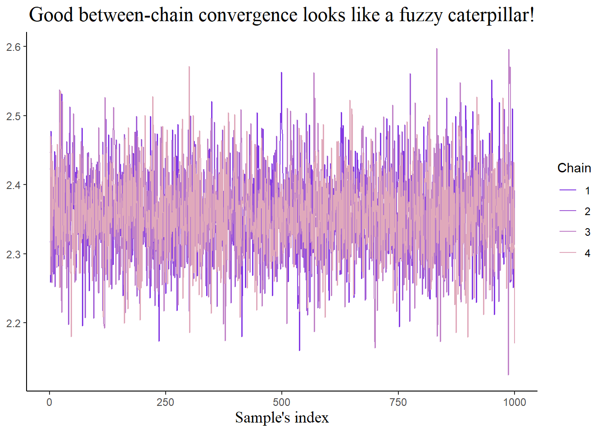
Now for posterior estimation!
posterior <- brm(formula = Bwt ~ Sex,
data = data,
prior = prior,
backend = "cmdstanr", # this is where the backend is defined
seed = 14) # setting a seed for the random MCMC sampling algorithmAfter compiling the Stan code and running the algorithm, we get our posterior distribution:
plot(posterior)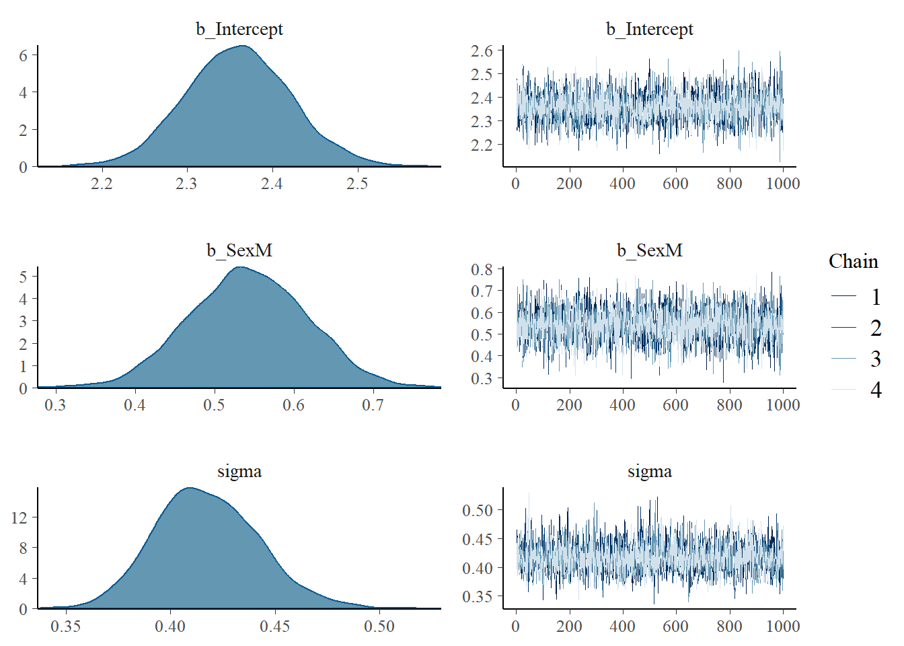
On the right we can see the Markov Chains and their (good) convergence, and on the left we can see the marginal posterior distribution of every parameter. Let’s inspect the R-hat and ESS convergence measures (aiming at \(\hat{R} \le 1.01\) and \(ESS \ge 1000\)):
brms::rhat(posterior)[1:2]b_Intercept b_SexM
1.000458 1.000181 bayestestR::effective_sample(posterior) |> insight::print_html()| Parameter | ESS |
|---|---|
| b_Intercept | 3946 |
| b_SexM | 4140 |
These measures also appear in the parameters::model_parameters() summary, so no need to actually calculate them separately.
If we omit the annoying sigma parameter, we can visualize the 2D posterior of the Intercept and Slope:
See code
draws <- spread_draws(posterior, b_Intercept, b_SexM)
p <- draws |>
ggplot(aes(x = b_Intercept, y = b_SexM)) +
geom_point() +
stat_density_2d(aes(fill = after_stat(density)), geom = "raster", contour = F) +
theme_classic() +
labs(x = "Intercept", y = "Sex[Male]") +
scale_x_continuous(expand = c(0, 0)) +
scale_y_continuous(expand = c(0, 0)) +
scale_fill_fermenter(palette = "Greens", direction = 1) +
theme(legend.position = "none",
axis.title = element_text(size = 13))
ggMarginal(p, type = "histogram",
xparams = list(fill = "#2ea64e", colour = "black"),
yparams = list(fill = "#2ea64e", colour = "black"))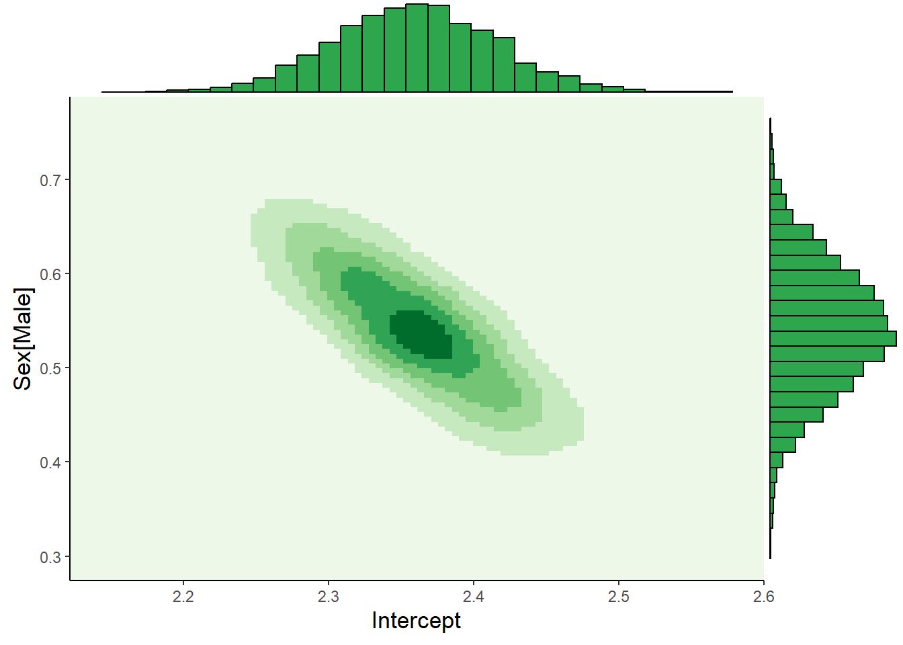
We can also inspect the posterior of the SexM coefficient alone (sex difference in weight) - also called a marginal posterior:
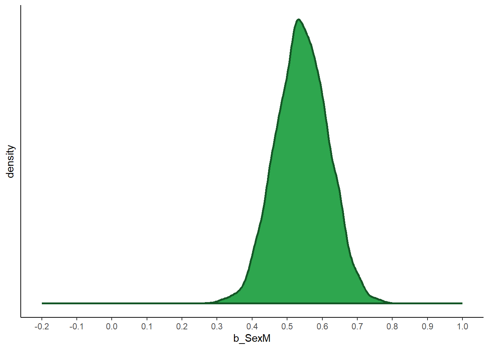
Notice the values most probable in the posterior are in the range of our hypothesis, and also in the range of the frequentist model. Some calculations that can be done on the posterior include:
Probability of direction
How much of the posterior is negative/positive? The answer to this question gives the probability that the parameter is different from zero:
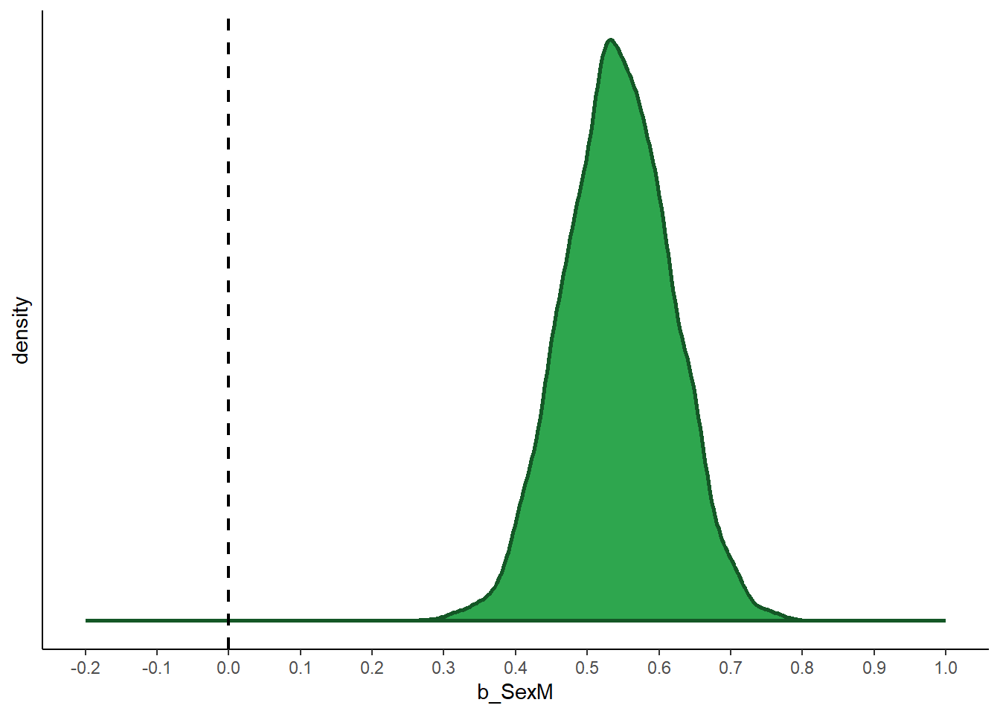
The posterior is entirely positive, yielding a 100% probability that the parameter is positive.
Can also be done with bayestestR wonderful functions.
bayestestR::p_direction(posterior, parameters = "b_SexM")Probability of Direction
Parameter | pd
----------------
SexM | 100%plot(bayestestR::p_direction(posterior, parameters = "b_SexM")) +
scale_fill_manual(values = "#2ea64e")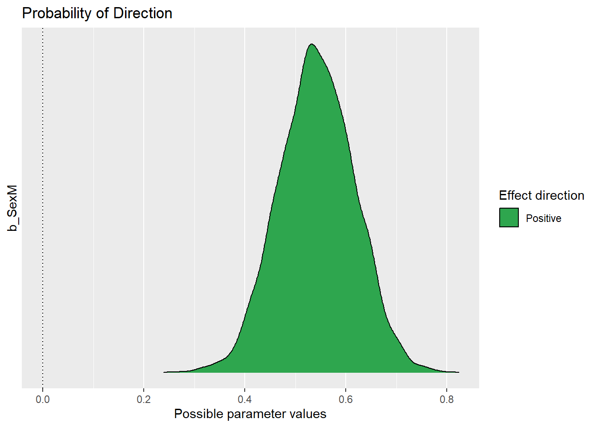
Highest Density Interval (HDI)
A common misconception of the frequentist’s confidence interval (with 95% credibility) is that it has a 95% probability of containing the true value of the parameter. The Bayesian Highest Density Interval however gives exactly this. The main 95% of the posterior have a 95% probability of containing the real value of the parameter. 95% are obviuosly arbitrary, and can be defined to anything else:
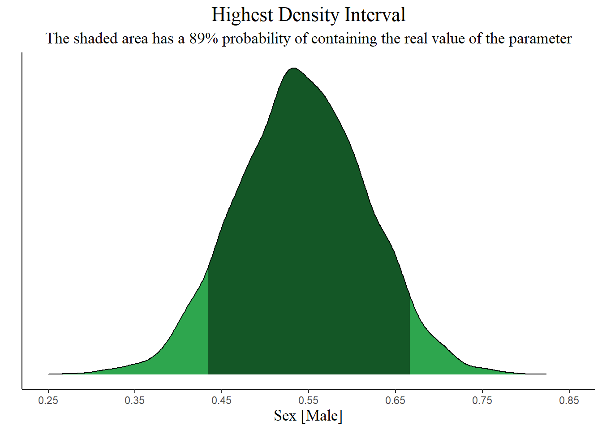
Point estimates
It is also possible to summarize the posterior distribution with point estimates like the mean, median and mode (Maximum A-posteriori Point - MAP). This is done easily with the model_parameters() function from the parameters package:
parameters::model_parameters(posterior, centrality = "all") |> insight::print_html()| Model Summary | |||||||
| Parameter | Median | Mean | MAP | 95% CI | pd | Rhat | ESS |
|---|---|---|---|---|---|---|---|
| Fixed Effects | |||||||
| (Intercept) | 2.36 | 2.36 | 2.36 | (2.24, 2.48) | 100% | 1.000 | 3946.00 |
| SexM | 0.54 | 0.54 | 0.53 | (0.40, 0.69) | 100% | 1.000 | 4140.00 |
| Sigma | |||||||
| sigma | 0.42 | 0.42 | 0.41 | (0.37, 0.47) | 100% | 1.000 | 3277.00 |
Conclusion
This post is just a brief introduction of Bayesian statistical modeling. For those psychology students who want to enrich their statistical analyses, it should provide the basic tools and intuition. This post will be followed up with a deeper dive in to more complex models (multiple linear models, mixed-effects linear models, generalized linear models, ordinal regression models…).
References
Bürkner, Paul-Christian. 2017. “Brms: An r Package for Bayesian Multilevel Models Using Stan.” Journal of Statistical Software 80 (1): 1–28. https://doi.org/10.18637/jss.v080.i01.
Etz, Alexander. 2018. “Introduction to the Concept of Likelihood and Its Applications.” Advances in Methods and Practices in Psychological Science 1 (1): 60–69. https://doi.org/10.1177/2515245917744314.
Kruschke, John. 2014. “Markov Chain Monte Carlo.” In Doing Bayesian Data Analysis: A Tutorial with r, JAGS, and Stan, 2nd ed. https://nyu-cdsc.github.io/learningr/assets/kruschke_bayesian_in_R.pdf.
Pawitan, Yudi. 2001. In All Likelihood: Statistical Modelling and Inference Using Likelihood. Oxford University Press.
Stan Development Team. 2018. “The Stan Core Library.” http://mc-stan.org/ 17.
Vehtari, Aki, Andrew Gelman, Daniel Simpson, Bob Carpenter, and Paul-Christian Bürkner. 2021. “Rank-Normalization, Folding, and Localization: An Improved \widehatR for Assessing Convergence of MCMC (with Discussion).” Bayesian Analysis 16 (2): 667–718. https://doi.org/10.1214/20-BA1221.
Footnotes
For example, consider the hypothesis that people in condition A are faster in a certain task than people in condition B. Your formal hypothesis look something like this: Reaction time follows a normal distribution with \(\mu=\beta_0+\beta_1condition\) and \(\sigma^2\). This model has 3 total parameters (\(\beta_0\), \(\beta_1\) and \(\sigma^2\)).↩︎
The term \(P(Data|Parameters)\) is not a probability distribution, but a special function called a Likelihood function and should be denoted by \(L(Parameters|Data)\).↩︎
Which is identical to the normal density function.↩︎
For the math nerds, the evidence is defined as this integral: \(\int_{\theta}P(X|\theta)P(\theta)d\theta\).↩︎